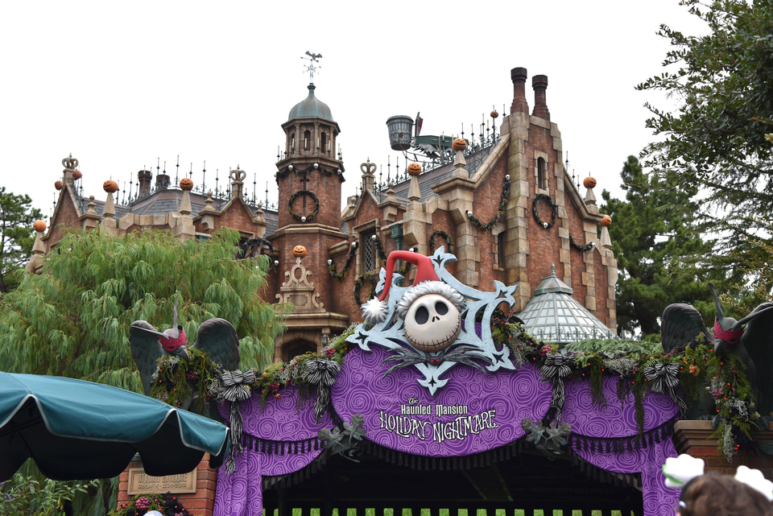

タイムライン
1
住吉を出発京葉線で舞浜へ。カチューシャは現地で並ばずメルカリ調達済みのものを持参
2
舞浜着・ゲート前で開園待ち朝イチ入園のために早めに並ぶ
3
入園 → アプリで3つ即実行ショーのエントリー受付（マジカルミュージックワールド夕方回）／美女と野獣のDPA購入（夕方枠）／スタンバイパス確認
4
ホーンテッドマンション “ホリデーナイトメアー”クリスマス限定版。いちばん並ぶので朝イチが正解

5
カントリーベア・シアター “ジングルベル・ジャンボリー”クリスマス版のショー。ウエスタンランドをのんびり散策
6
ワールドバザールのツリーで写真巨大クリスマスツリーとデコレーション。お土産は夜の混雑を避けてアプリ購入も手

7
ブルーバイユー・レストランでランチカリブの海賊の川辺にある店内レストラン。PS（優先案内）で入る
8
昼パレード「トイズ・ワンダラス・クリスマス！」今年のクリスマスの主役。30分前から城前〜プラザで場所取り。有料DPA席もあり

9
ジョリーフード・プラザで食べ歩きシンデレラ城前に初登場のクリスマスフード集結エリア
10
ハーモニー・イン・カラー or アトラクション通常パレードも公演あり。プーさんのハニーハント等に振ってもOK
11
ミッキーのマジカルミュージックワールドエントリー当選想定。外れたらミッキーの家でミート・ミッキーへ
12
美女と野獣 “魔法のものがたり”（DPA）日が落ちたファンタジーランドがいちばんきれいな時間

13
エレクトリカルパレード・ドリームライツクリスマス期間限定バージョン。音楽もコスチュームもクリスマス仕様

14
花火「スターブライト・クリスマス」クリスマスソングにのせた約5分の花火

15
閉園おつかれさま。帰りは京葉線で住吉へ
場所の地図
当日の公式スケジュール
公演時刻と休止情報はこのQRから公式ページで確認できます
リンク集
注意メモ
- 公演時刻はクリスマス期間の現在パターン。12/17分の正式時刻は12月上旬に公式アプリで確定
- ブルーバイユーのPSが取れなかった場合、当日枠が当日の朝9:00からオンラインで出る
- DPA（美女と野獣）とショーのエントリーは入園直後にアプリで。後回しにすると枠が消える